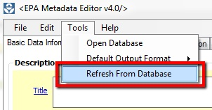

EPA Metadata Editor (EME)
Customizing the EPA Metadata Editor Database
The EME utilizes data tables stored as Extensible Markup Language (XML) files to supply default
information within the user interface. By using the provided data table editor, information stored in the XML files can
be modified by the user to include new data or to change defaults that are
used by the 'Set Default' buttons.
Database Structure
The data table names are structured to align closely with name of the user interface control name.
Each table has a column in it called 'default'. This column
controls what is selected in the EME when the user clicks on the 'Set Default'
or 'D' buttons. Users may change the defaults used by the EME by selecting the
checkbox next to the entry of their choice. Note that you will need to uncheck
the currently selected default when selecting a new default.
Editing the Database
To modify the EME data tables, take the following steps:
- Navigate to Tools --> Open Database.
- Locate and open a table of interest (e.g., "Contact_Info").
- Click the "Enable Edit Mode" button.
- Change the default by selecting a new default entry and deselecting the
existing default entry.
- Add new information by adding a new row to the table and entering your
own data.
- If you don't want anything to be selected as default for a particular
field, deselect all checkboxes in the user interface.
- Click the "End Edit Mode" button.
- Close the EmeDatabase window.
- Click on the 'Refresh DB' button to update the user interface.

Special Data Table Customizations
The EME provides a user interface for editing commonly accessed data tables. The EMEdb folder also stores a template metadata record used for populating additional default content (ISO19115MD_GenericMetadataTemplate.xml). Changes to these XML files can easily be shared with users. Other XML files found within the EMEdb folder should not be modified. Changes to those files could cause stability issues with the application.
Data table storage location
The XML data tables are stored in two places on a user's computer. During installation, back-up copies are placed in the application installation directory on your machine (usually, C:\Program Files (x86)\Innovate! Inc\EPA Metadata Editor v4.0\Eme4xSystemFiles\EMEdb). The EME also creates an editable copy of the XML data tables in each user's application data folder (e.g., "C:\Users\dparrish\AppData\Roaming\Innovate! Inc\EPA Metadata Edtior 4x\Eme4xSystemFiles\EMEdb). EME makes this copy so that the operational data are not write-protected.
When EME starts, it looks for the data tables in the following locations:
- Check and use if the EMEdb folder exists in users own area
- Otherwise make a copy the EMEdb folder from the installation directory into the user's own area.
Changes made to the XML files located in the user's application data folder will only be seen by that user. The user can revert back to the originally installed data tables by closing the EME application and deleting the EMEdb folder located in their user directory. The next time EME is launched, a copy the EMEdb folder from the installation directory will be placed into the user's own area.
Understanding this behavior will also assist in sharing data table customizations with other uses. To share on a user-by-user basis a person can copy their EMEdb folder (located in their application data folder) to the intended user's application data folder. Alternatively, if advanced users wish to make system-wide changes and override the original data, the folder could be copied into the application installation directory and subsequently deleting the EMEdb folder in each existing user's application data folder. Prior to doing this it is recommended to create a back-up of the original EMEdb folder.
Modifying the default metadata template
Users can auto-populate an empty metadata record using values stored in a template record by clicking the "Set Defaults From Template" button under the Edit menu item. The template record is located in the EMEdb folder and named "ISO19115MD_GenericMetadataTemplate.xml".

To modify the template, open the EME Metadata Editor. By default the user interface is blank. Click "Set Defaults From Template" to populate the form and then make desired changes. Then, to save changes back to the template, click Save and navigate to the template record in the user's application data folder (e.g., "C:\Users\dparrish\AppData\Roaming\Innovate! Inc\EPA Metadata Edtior 4x\Eme4xSystemFiles\EMEdb ISO19115MD_GenericMetadataTemplate.xml"). Sharing this template is accomplished in the same manner as outlined above in the "Data table storage location" section.